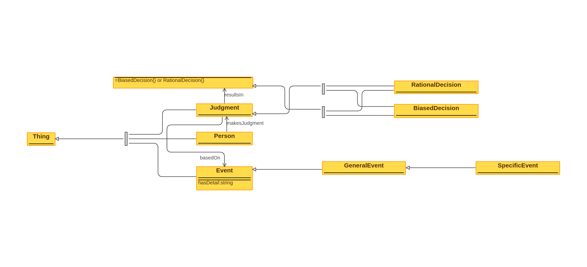

Examples of usage
The conjunction fallacy, highlighted by the Linda problem, occurs when people incorrectly believe
that specific conditions are more probable than a single general one. Here are several examples:
- Tom’s Study Habits: Tom is described as a disciplined and diligent student.
When asked what is more probable, that Tom studies more than 8 hours a week or that Tom
studies more than 8 hours a week and is part of a student organization, people might
incorrectly choose the latter, despite it being a conjunction of two conditions and
inherently less probable.
- Restaurant Choices: Sarah loves Italian cuisine and is very
health-conscious. Asked what is more likely, that Sarah will eat at any restaurant tonight
or that she will eat at an Italian restaurant that offers organic dishes, people may
mistakenly judge the more specific scenario as more likely, despite the general scenario
inherently encompassing more possibilities.
- Investment Decision: An investor is described as cautious and favoring
technology stocks. If presented with the options that the investor will buy stocks this
month or that he will buy technology stocks this month because he expects them to rise, many
might wrongly see the latter, more specific option as more probable.
- Travel Plans: Lisa is planning a vacation and loves adventure travel. When
questioned whether it's more probable that Lisa will go to South America for her vacation or
that she will go to Peru to hike the Inca Trail, the conjunction of hiking the Inca Trail in
Peru might incorrectly seem more likely to some, despite the broader option being
statistically more probable.
- Health Outcome: A patient is suffering from common flu symptoms. When asked
whether it's more likely that the patient simply has the flu or that the patient has the flu
and a rare complication, people might erroneously choose the more specific, conjunctive
option due to the detailed description, despite it being less probable overall.
These examples demonstrate the conjunction fallacy by showing how adding specific details can
make an option seem more likely, even when statistically, it's less probable than a more general
alternative.
Creating an Ontology
Classes:
- Person (Judge). Represents individuals subject.
- Event. Represents an occurrence or scenario that can be judged for its
likelihood.
- GeneralEvent (subclass of Event). A broader, more inclusive occurrence or
scenario.
- SpecificEvent (subclass of Event). A detailed scenario that includes
additional conditions, making it more specific.
- Judgment
- RationalDecision: A decision based on logical assessment and statistical
likelihood.
- ConjunctionFallacy: A cognitive bias where people mistakenly believe that
specific conditions are more probable than a single general one.
Properties (Attributes and Relationships):
- hasDetail
- Domain: Event
- Range: String
- Description: Describes the details or conditions of an event.
- makesJudgment
- Domain: Agent
- Range: Judgment
- Description: Links a person to their judgment about an event's likelihood.
Ontology visualization
TTL code for the ontology